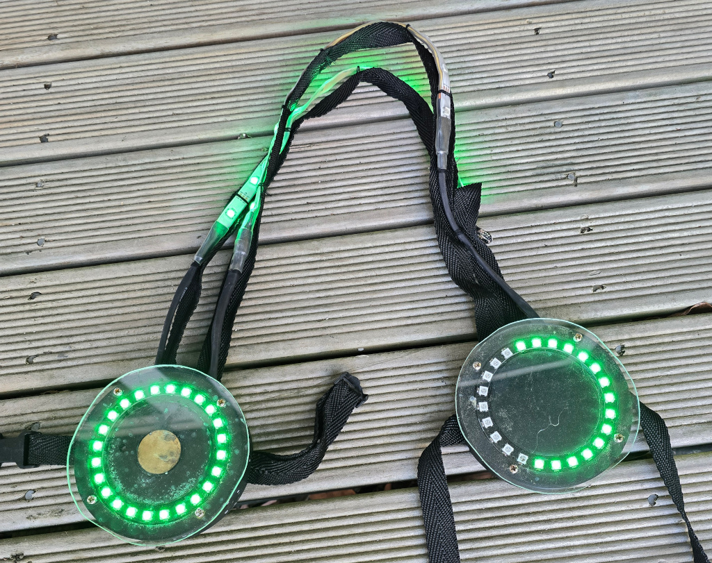
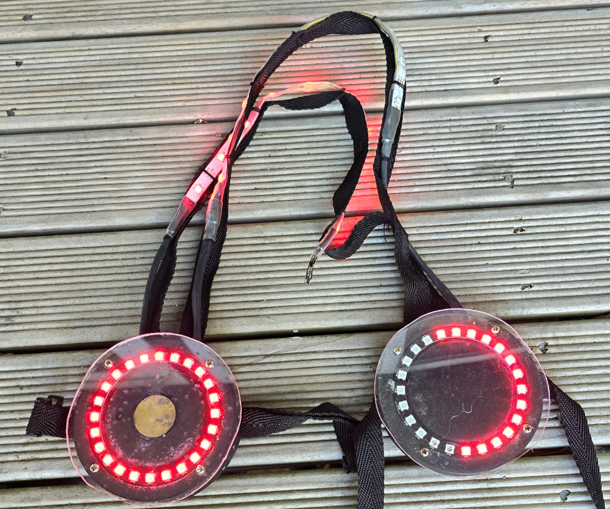

Q-Prop Creations
Juggernaut Clock
A pair of big LED rings worn on the front and back of a juggernaut player, the rings change colour depending on whether the Jug is active. Red means danger, Jug is shooting. Green means safe, jug isn't shooting.
The front ring is a target, shoot the ring and the Jug will deactivate for 30 seconds. The ring will count that time down, letting you know how much time you have to claim the Jug for your team.

